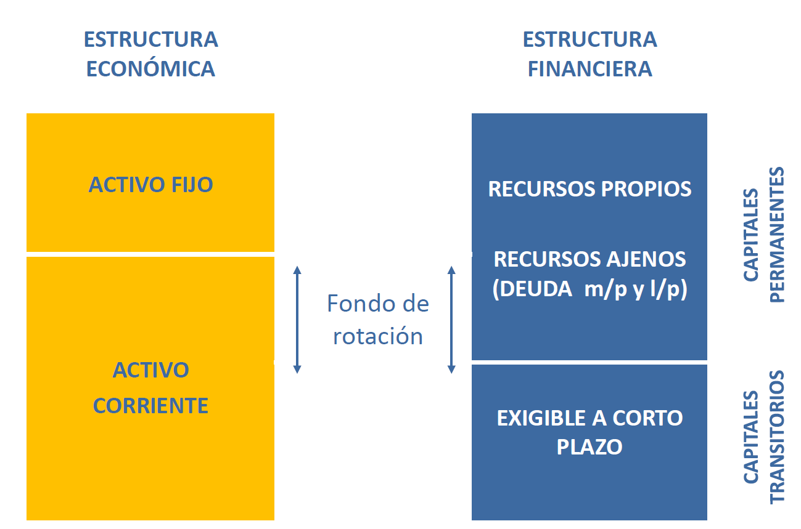

Tema 2 - La estructura de financiación I🔗
1. La estructura financiera de la empresa🔗
Es el conjunto de decisiones relativas a la obtención de recursos
Tipos:
- Según la propiedad: propios (capital social, reservas, autofinanciación...) o ajenos (créditos, préstamos, proveedores, obligaciones, leasing...)
- Según el periodo: permanentes o corrientes
- Según el origen: externos (capital social, obligaciones, préstamos...) o internos (beneficios retenidos, venta de activos, proveedores...)
| Propios | Ajenos | Internos | Externos | Permanentes | Corrientes | |
|---|---|---|---|---|---|---|
| Póliza de crédito | ||||||
| Beneficio retenido | ||||||
| Ampliación de capital | ||||||
| Proveedores | ||||||
| Leasing | ||||||
| Obligaciones convertidas en acciones | ||||||
| Venta de activos |

Fondo de rotación = Fondo de maniobra = PN - AC = AC - PC = PF - AF
TODO: contrastar fórmula de arriba. Viene de Nadia.

- BAII: beneficio antes de intereses e impuestos
- BDII: beneficio después de intereses e impuestos
- EBITDA: Beneficio - ITDA = EBITDA
- Intereses
- Tax - Impuestos
- Depreciaciones
- Amortizaciones
- r: intereses
\(V=S+D\)
\(BAII=BDII+r_d→BDII=BN=BAII-r_d\)
Grado de apalancamiento🔗

2. Riesgo y apalancamiento🔗
3. La posición tradicional🔗
4. Estructura de capital en mercados perfectos: las proposiciones de medigliani y miller🔗
Last update: March 21, 2021